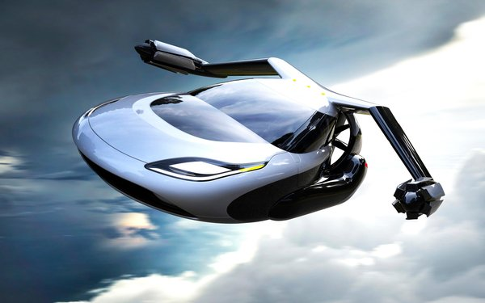

The Future of Cars Is Already Here!

in the last hangar off the runway in Prineville, Oregon,
Sam Bousfield locked down one of the wings to his flying car...
His engineer was busy burnishing the parabolic slope of the carbon-fiber finish.
Bousfield handed me half a tail wing. It floated in my hand, light as balsa wood.
“Eight pounds,” he said, which, for a structural component of an airplane,
is almost nothing. Off in the far side of the hangar sat his original wooden
mock-up of the chassis, a three-wheeled aerodynamic lozenge right out of a manga
enthusiast’s idea of a speed racer... He encouraged me to climb in and get a feel
for the feng shui of the driver’s seat, the view out the windshield, the sense of
balance. But what he really wanted me to see was that this thing was real—that the
flying car is no longer in that jetpack realm of promising technology that never
quite arrives. “I expect to take this car into the air in June,” he said...
When Cars Fly

the automobile has long been a symbol of everything great and everything terrible
about America. On the one hand: freedom, individualism, power, speed. The taming of
millions of miles of varied wildernesses through roads, then highways, then
interstates. The capacity of American industry—Pittsburgh’s steel, Akron’s rubber,
Detroit’s factories. But on the other hand: gas-guzzling SUVs. Traffic and sprawl.
The abandonment of mass transit. The suburb and then the exurb, with their
undeniable ties to white flight and segregation. The decline of the Rust Belt,
the near-collapse of the Big Three automakers during the Great Recession of 2008,
and the slow death of ...
Where Are the Flying Cars?

flying cars have been part of our science-fiction dreams ever since Henry Ford
pitched an early personal airplane back in 1926—Ford’s aircraft division actually
tried to build a "Model T of the air." Ninety years later, discarded prototypes
litter junkyards and collectors’ garages, but no viable mass-market product has ever
emerged. That might still change. The latest candidates include Skycar, a flying-car
prototype, and the Ehang 184, an autonomous electric quadcopter introduced at the 2016
Consumer Electronics Show, in Las Vegas. In 2013, a company called Terrafugia announced
plans for a self-flying car; it expects to have a prototype ready for testing by 2018.